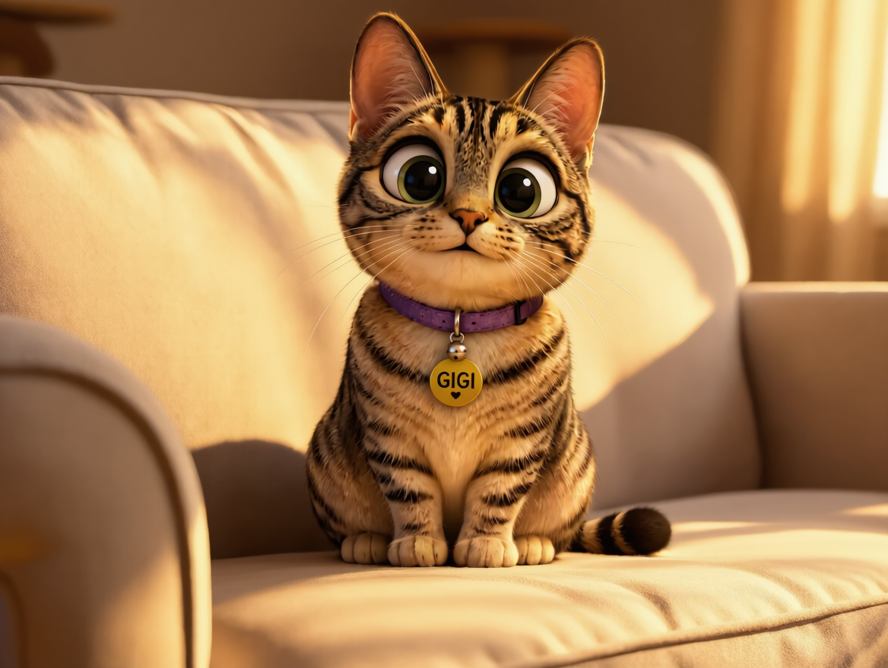
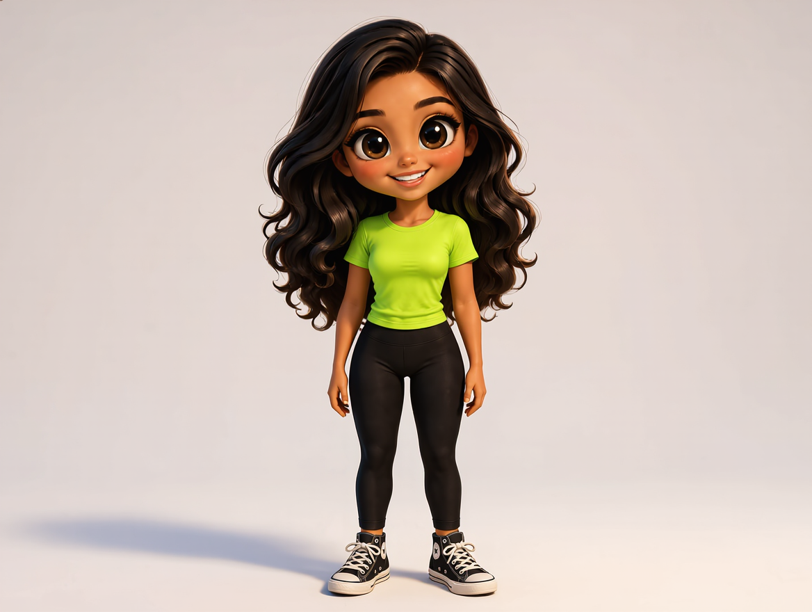

Life With Gigi
Midnight Zoomies
Dordor wants sleep. Gigi has other plans.


Score0
Treats0
Lives3
Chaos0%
Tap the play area or Jump to leap. Tap again for a double jump.
Collect 🐟 treats. Jump over 📦 boxes, 🥿 slippers, and Dordor.
Three lives. Faster every 20 seconds. Zoomies protects you for 4 seconds.
Keyboard: Space / ↑ jump · Z zoomies · P pause